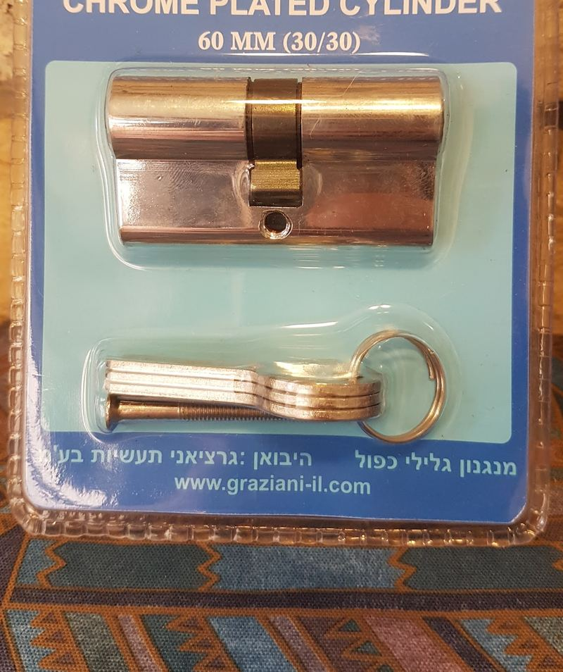
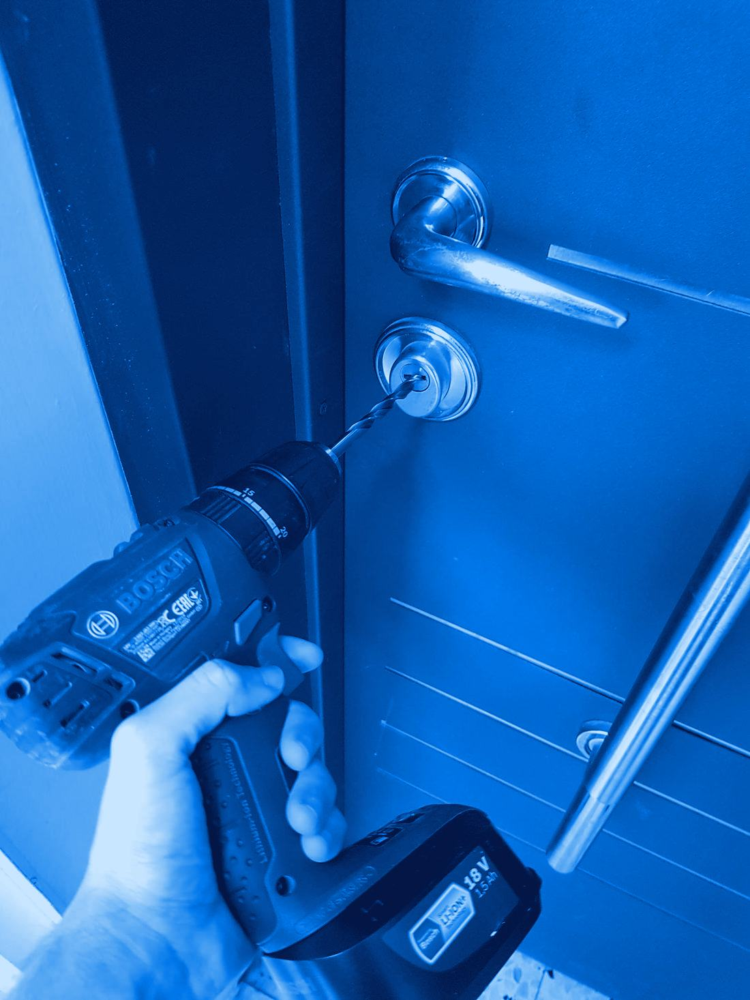
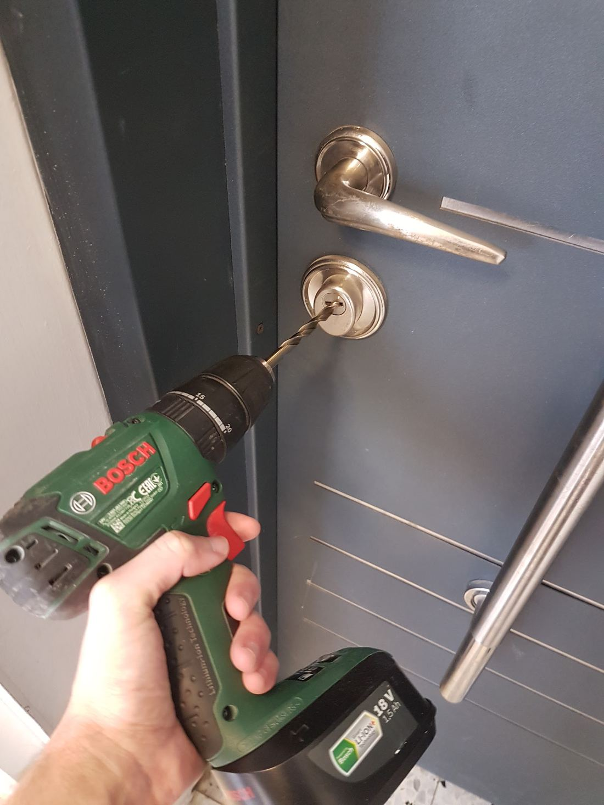
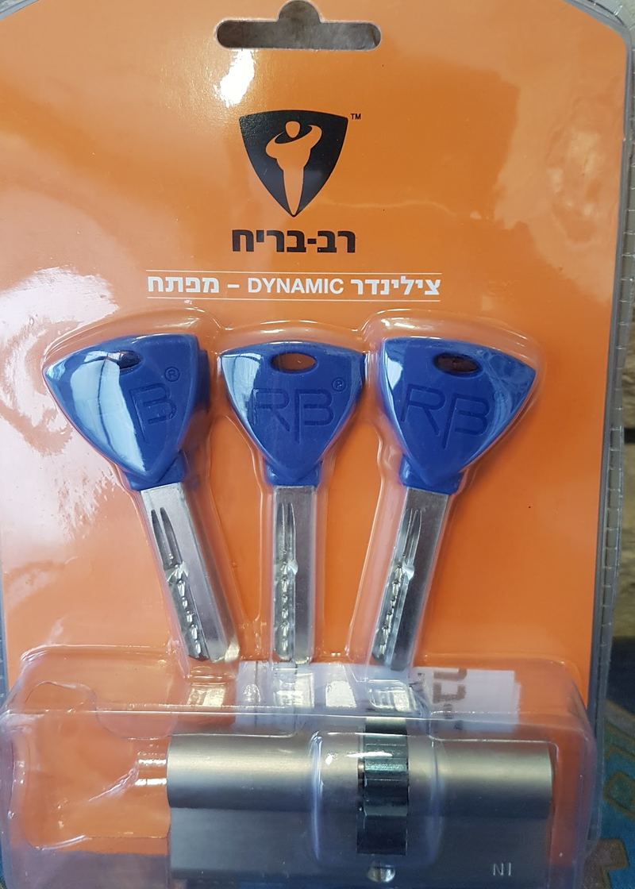
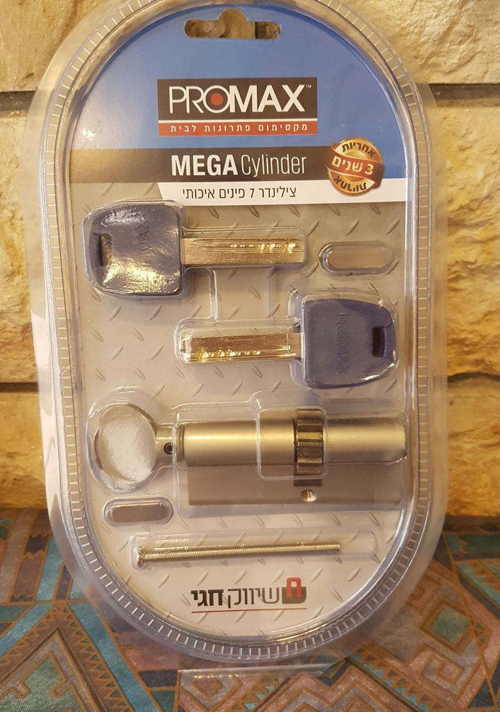
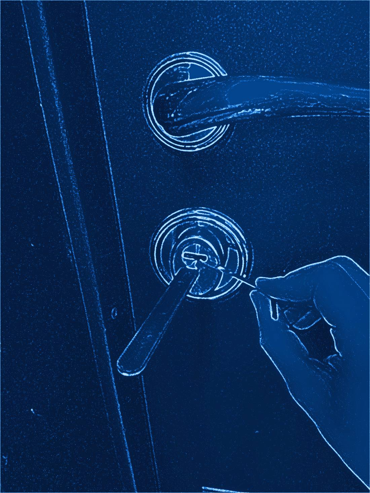
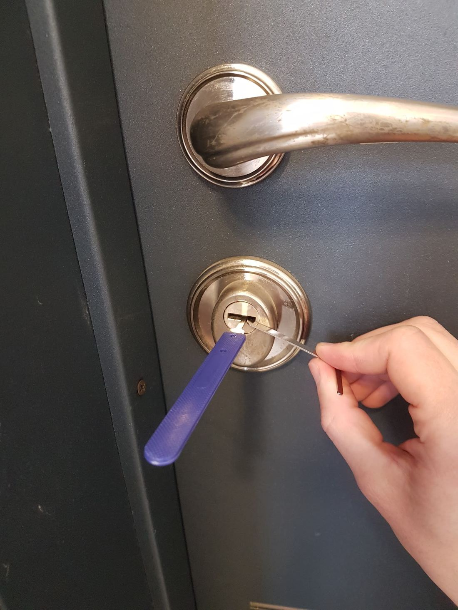
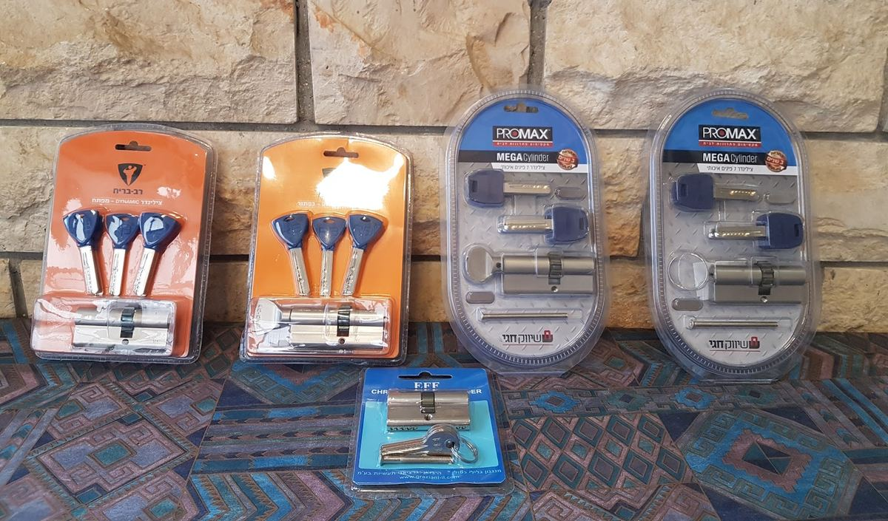
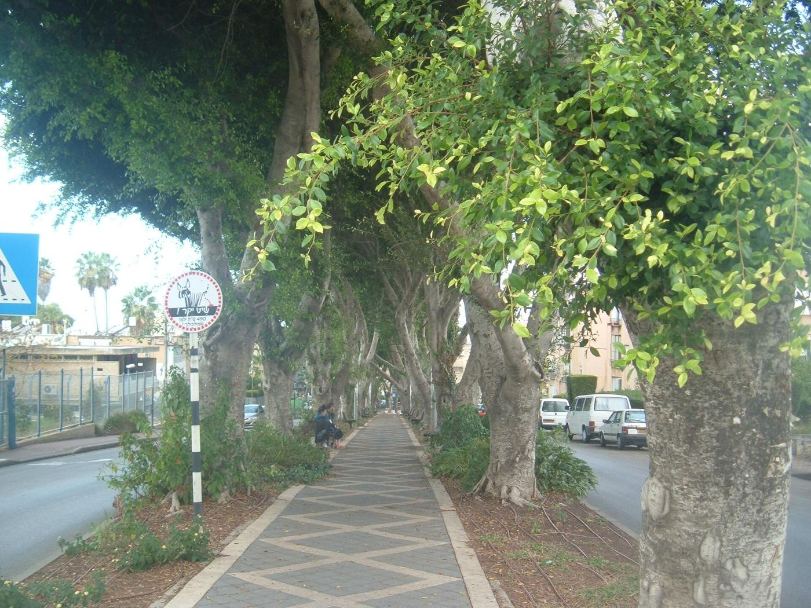

החלפת צילינדרCylinder replacement
רב בריח, Mul-T-Lock ועוד.Rav Bariach, Mul-T-Lock and more.
קונספט לדוגמה שנבנה עבור ש.ת מנעולן · זה אינו האתר הרשמי של העסקA sample concept built for S.T Locksmith · This is not the business’s official website


שמואל מחליף צילינדרים, פותח דלתות, רכבים וכספות ומשכפל מפתחות. מנעולן מורשה, בעל תעודת יושר ממשטרת ישראל.Shmuel replaces cylinders, opens doors, cars and safes, and copies keys. A licensed locksmith with a certificate of integrity from the Israel Police.
מתוך התמונות של שמואל · הזיזו את הפנסFrom Shmuel’s own photos · move the torch
האני מאמין שלנו: אמינות, יושרה, מקצועיות ואחריות.Our creed: reliability, integrity, professionalism and responsibility.
בבית, ברכב ובעסק: מנעולים, דלתות, כספות ומפתחות.At home, in the car, at the business: locks, doors, safes and keys.

רב בריח, Mul-T-Lock ועוד.Rav Bariach, Mul-T-Lock and more.
וגם מנעולים וכספות.Locks and safes too.

גם מפתח נוסף לרכב.Spare car keys too.
התקנה ותיקון.Fitted and repaired.

מנגנונים, מנעול עליון ודלתות עץ.Mechanisms, top locks and wooden doors.
וגם מנעול מכני לשבת.And mechanical Shabbat locks.


בפריצת רכב, הדבר החשוב הוא לפתוח את הדלת בלי לפגוע במנגנון, בדלת או בכל דבר אחר.With a car, what matters is opening the door without harming the mechanism, the door or anything else.מתוך האתר של העסקFrom the business’s website (translated)
דלתות פלדה ודלתות עץ: צילינדרים, מנגנונים ומנעולים מכל הסוגים.Steel and wooden doors: cylinders, mechanisms and locks of every kind.
כספות, ומנעול עליון מסוג כספת לדלת הבית.Safes, and safe-type top locks for the front door.

רב בריח, פרומקס, EFF ועוד, מתוך התמונות של שמואל.Rav Bariach, Promax, EFF and others, from Shmuel’s photos.
הצילינדר הישן יוצא מהדלת.The old cylinder comes out of the door.
צילינדר חדש, ומפתחות משלו.A new cylinder, with its own keys.
לכל הביקורות בגוגלAll reviews on Google״שמואל הוא איש מקצוע ישר כסרגל! הוא הסביר בפירוט את הצורך בכל תיקון, ולא ניסה למכור לי שום דבר מיותר.״
“Shmuel is as straight as a ruler! He explained in detail why each repair was needed, and didn’t try to sell me anything I didn’t need.”
ברצוני לשבח את שמואל המנעולן שעשה עבודה מקצועית מאוד גם בדלת הפלדת בבית שלי וגם בשכפול מפתח נוסף לרכב בצורה מופלאה ונקיה. ישר כח, ממליצה בחום ובאהבה רבה.
I want to praise Shmuel the locksmith, who did very professional work on the steel door at my home and on a spare car key, wonderfully and cleanly. Well done, I recommend him warmly and with much love.
חייבת לפרגן על שירות הגון אדיב מקצועי ומהיר ביותר… עושה את העבודה בצורה יסודית ביותר!! אני ובעלי הזמנו אותו לשכפל לנו מפתח של הרכב. שירות יוצא דופן!
I have to give credit for honest, courteous, professional and very quick service… He does the job extremely thoroughly!! My husband and I had him copy our car key. Exceptional service!
הזמנתי אותו לשכפל מפתח לרכב… ועשה עבודה מקצועית ומהירה. הוא לא זלזל בחוסר הידע שלי והסביר לי כל דבר שעשה, ובאופן כללי יש ממנו תחושה של בן אדם טוב. ממליצה מאוד!!
I had him copy a car key… and he did professional, quick work. He didn’t look down on what I didn’t know, explained everything he did, and overall he comes across as a good person. Highly recommended!!
בן אדם מקסים, בא סידר ממש שתי דקות והייתי בחוץ. למרות שהגעתי לתקלה שהוא לא מתעסק בה בדרך כלל. תודה רבה
A lovely person. He came, sorted it in literally two minutes and I was out, even though it was a problem he doesn’t usually deal with. Thank you very much.
בקריות והסביבה, מהבסיס בשדרות כצנלסון בקריית אתא. באתר של העסק כתוב גם: מתן שירות בכל הארץ.Across the Krayot and around them, from Katznelson Blvd in Kiryat Ata. The business’s website also says it serves the whole country.
ראשון עד חמישי, 24 שעות. שישי עד 13:30, ומוצאי שבת מ-21:00. בשבתות ובחגים אין שירות.Sunday to Thursday, around the clock. Friday until 13:30, and Saturday night from 21:00. No service on Shabbat and holidays.
כן. לפי האתר של העסק: מנעולן מורשה, בעל תעודת יושר ממשטרת ישראל.Yes. According to the business’s website: a licensed locksmith with a certificate of integrity from the Israel Police.
כן. שכפול מפתחות לרכב חוזר בכמה מהביקורות בגוגל.Yes. Car key copies come up in several of the Google reviews.
כן. מנעול מכני (שבת) נמצא ברשימת השירותים, לצד מנעול חכם.Yes. A mechanical (Shabbat) lock is on the list of services, next to smart locks.
באתר מופיעים רב בריח ו-Mul-T-Lock, ובתמונות של העסק גם פרומקס ו-EFF.The website lists Rav Bariach and Mul-T-Lock, and the business’s photos also show Promax and EFF.

שדרות הציונות, קריית אתא · צילום: Almog, נחלת הכללHazionut Blvd, Kiryat Ata · photo: Almog, public domain